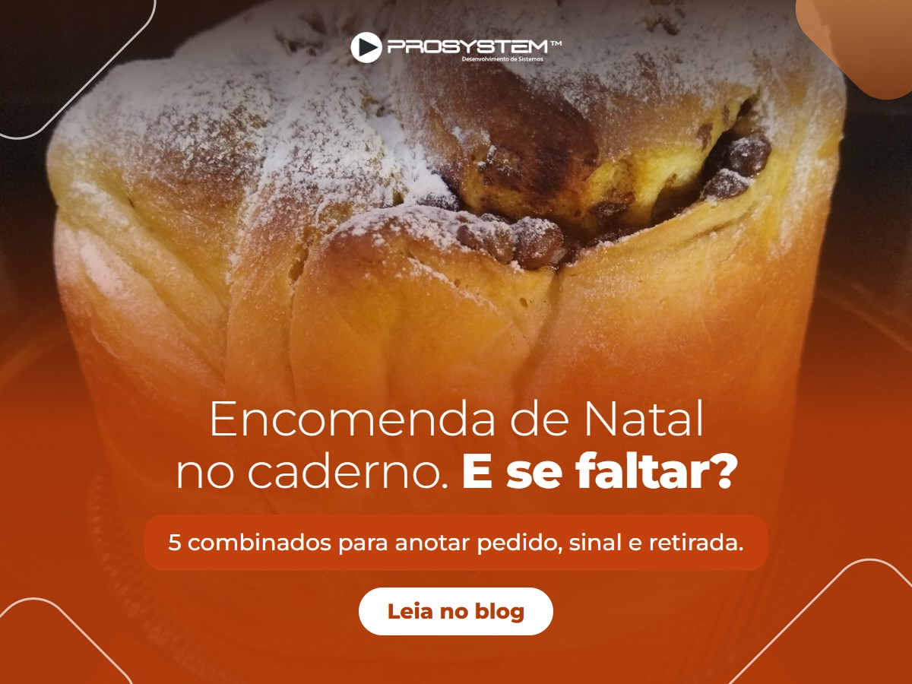

<title>Google ProSystem até 20/01</title>
<meta name="claude:viewport-fit-sides" content="cover">
<link rel="stylesheet" href="https://fonts.googleapis.com/css2?family=Montserrat:wght@300;500;700;800&family=Source+Sans+3:wght@400;600&display=swap">
<style>
/* Layout: guia de trabalho em uma coluna; cada post é uma ficha com imagem à esquerda e texto pronto para copiar. */
:root{
  --bg:#F3F6FB; --card:#FFFFFF; --fg:#0E1B33; --mut:#566582; --linha:#D9E1EE;
  --azul:#2E6DB4; --ciano:#38C8F8; --lar:#C2410C; --lar-bg:#FDEBDD; --azul-bg:#E3EDF9; --cod:#EEF2F8;
  --f-tit:'Montserrat',Arial,sans-serif; --f-txt:'Source Sans 3','Segoe UI',Arial,sans-serif;
}
@media (prefers-color-scheme: dark){:root:not([data-theme="light"]){
  --bg:#0A1222; --card:#111C31; --fg:#E7EEF9; --mut:#9AA9C4; --linha:#24324D;
  --azul:#6FA6E6; --ciano:#5ED3FA; --lar:#F59A5C; --lar-bg:#3A2114; --azul-bg:#16294A; --cod:#172440; color-scheme:dark}}
:root[data-theme="dark"]{
  --bg:#0A1222; --card:#111C31; --fg:#E7EEF9; --mut:#9AA9C4; --linha:#24324D;
  --azul:#6FA6E6; --ciano:#5ED3FA; --lar:#F59A5C; --lar-bg:#3A2114; --azul-bg:#16294A; --cod:#172440; color-scheme:dark}
*{box-sizing:border-box}
body{background:var(--bg);color:var(--fg);font-family:var(--f-txt);font-size:17px;line-height:1.55}
.pag{max-width:1080px;margin:0 auto;padding-block:40px 80px;padding-left:max(16px,env(safe-area-inset-left,0px));padding-right:max(16px,env(safe-area-inset-right,0px));display:flex;flex-direction:column;gap:44px}
h1,h2,h3{font-family:var(--f-tit);margin:0;text-wrap:balance;letter-spacing:-.01em}
h1{font-weight:300;font-size:clamp(30px,5vw,46px);line-height:1.08}
h1 b{font-weight:800}
h2{font-weight:800;font-size:24px}
h3{font-weight:700;font-size:19px;line-height:1.25}
p{margin:0;max-width:68ch}
a{color:var(--azul)}
.rotulo{font-family:var(--f-tit);font-weight:700;font-size:12px;letter-spacing:.12em;text-transform:uppercase;color:var(--azul)}
header{display:flex;flex-direction:column;gap:16px;padding-bottom:28px;border-bottom:2px solid var(--linha)}
.resumo{display:flex;flex-wrap:wrap;gap:10px 28px;color:var(--mut);font-size:15px}
.resumo strong{color:var(--fg);font-family:var(--f-tit)}
section{display:flex;flex-direction:column;gap:18px}
ol.passos{margin:0;padding:0;list-style:none;display:grid;gap:12px;counter-reset:n}
ol.passos li{counter-increment:n;display:grid;grid-template-columns:40px 1fr;gap:14px;align-items:start;background:var(--card);border:1px solid var(--linha);border-radius:14px;padding:14px 18px}
ol.passos li::before{content:counter(n);width:32px;height:32px;border-radius:9px;transform:rotate(45deg) scale(.85);background:linear-gradient(135deg,var(--azul),var(--ciano));color:#fff;font-family:var(--f-tit);font-weight:800;display:flex;align-items:center;justify-content:center}
ol.passos li span{min-width:0}
ol.passos b{font-weight:600}
.regras{display:grid;grid-template-columns:repeat(auto-fit,minmax(240px,1fr));gap:12px}
.regras div{background:var(--card);border:1px solid var(--linha);border-radius:14px;padding:14px 18px;display:flex;flex-direction:column;gap:4px;min-width:0}
.regras strong{font-family:var(--f-tit);font-size:15px}
.regras span{color:var(--mut);font-size:15px}
.tab{overflow-x:auto;background:var(--card);border:1px solid var(--linha);border-radius:14px}
table{border-collapse:collapse;width:100%;font-size:15px}
th,td{text-align:left;padding:10px 16px;border-bottom:1px solid var(--linha);vertical-align:top}
th{font-family:var(--f-tit);font-size:12px;letter-spacing:.08em;text-transform:uppercase;color:var(--mut)}
tr:last-child td{border-bottom:0}
td.num{font-variant-numeric:tabular-nums;white-space:nowrap;font-weight:600}
tr.pausa td{color:var(--mut);font-style:italic;background:var(--cod)}
.post{display:grid;grid-template-columns:minmax(0,420px) minmax(0,1fr);gap:24px;background:var(--card);border:1px solid var(--linha);border-radius:18px;padding:20px;scroll-margin-top:16px}
.post-img img{display:block;width:100%;height:auto;border-radius:10px;aspect-ratio:4/3;max-width:100%}
.post-corpo{display:flex;flex-direction:column;gap:14px;min-width:0}
.post-topo{display:flex;gap:10px;align-items:center;flex-wrap:wrap}
.data{font-family:var(--f-tit);font-weight:800;font-size:15px;font-variant-numeric:tabular-nums}
.seg{font-size:13px;font-weight:600;padding:3px 10px;border-radius:99px}
.seg-azul{background:var(--azul-bg);color:var(--azul)}
.seg-lar{background:var(--lar-bg);color:var(--lar)}
.campos{margin:0;display:grid;gap:6px;font-size:15px}
.campos div{display:grid;grid-template-columns:90px 1fr;gap:10px}
.campos dt{color:var(--mut)}
.campos dd{margin:0;min-width:0;overflow-wrap:anywhere;display:flex;flex-wrap:wrap;gap:4px 10px;align-items:center}
.campos small{flex-basis:100%;color:var(--mut)}
code{font-size:13px;background:var(--cod);padding:1px 5px;border-radius:5px}
.texto-topo{display:flex;justify-content:space-between;align-items:center;gap:10px;flex-wrap:wrap;font-size:13px;color:var(--mut)}
pre.texto{margin:0;white-space:pre-wrap;font-family:var(--f-txt);font-size:15px;line-height:1.5;background:var(--cod);border-radius:10px;padding:14px 16px;max-height:340px;overflow:auto}
button.copiar{font:600 14px var(--f-txt);border:1.5px solid var(--azul);background:var(--azul);color:#fff;border-radius:99px;padding:6px 16px;cursor:pointer}
button.copiar.mini{background:transparent;color:var(--azul);padding:2px 10px;font-size:12px}
button.copiar:focus-visible{outline:3px solid var(--ciano);outline-offset:2px}
button.copiar.ok{background:transparent;color:var(--azul)}
.aviso{border-left:4px solid var(--lar);background:var(--card);border-radius:0 14px 14px 0;padding:14px 18px;display:flex;flex-direction:column;gap:6px}
.aviso ul{margin:0;padding-left:20px;display:grid;gap:6px}
@media (max-width:760px){.post{grid-template-columns:1fr}.campos div{grid-template-columns:76px 1fr}}
@media (prefers-reduced-motion:reduce){*{scroll-behavior:auto}}
</style>

<main class="pag">
<header>
  <span class="rotulo">Perfil da Empresa no Google · ProSystem Sistemas</span>
  <h1>11 postagens prontas, <b>de 05/11/2026 a 20/01/2027</b></h1>
  <p>Cada ficha abaixo tem a imagem, o texto para colar, o botão, o link e a data para programar. Todas são do tipo <b>Atualização</b> e saem às 9h. Não há postagens de 23/12 a 02/01, por causa da pausa do planejamento.</p>
  <div class="resumo"><span><strong>11</strong> postagens</span><span><strong>4</strong> de farmácia</span><span><strong>4</strong> de padaria</span><span><strong>3</strong> para os dois</span><span>Imagem <strong>1200 × 900</strong>, JPG</span></div>
</header>

<section>
  <h2>Como programar cada postagem</h2>
  <ol class="passos">
    <li><span>Entre na conta Google que administra o perfil da ProSystem e abra o <b>Perfil da Empresa</b> (pesquise "ProSystem Sistemas" no Google ou acesse business.google.com).</span></li>
    <li><span>Clique em <b>Adicionar atualização</b> (ou <b>Criar postagem</b>) e escolha o tipo <b>Atualização</b>.</span></li>
    <li><span>Em <b>Adicionar fotos</b>, envie a imagem da ficha. Use o arquivo da pasta <code>outputs/criativos/google-nov-jan/imagens</code> ou abra o nome do arquivo na ficha e salve a imagem.</span></li>
    <li><span>Clique em <b>Copiar texto</b> na ficha e cole na descrição.</span></li>
    <li><span>Em <b>Adicionar um botão</b>, escolha <b>Saiba mais</b> e cole o link da ficha.</span></li>
    <li><span>Ligue <b>Programar esta postagem</b> e escolha a data e a hora da ficha. Deixe <b>Repetições</b> desligado.</span></li>
    <li><span>Clique em <b>Programar</b>. Depois da data, confira se a postagem aparece como <b>Ativa</b>. Se aparecer <b>Não aprovada</b>, veja o motivo no próprio perfil e me mande.</span></li>
  </ol>
</section>

<section>
  <h2>Regras que os textos já seguem</h2>
  <div class="regras">
    <div><strong>Sem telefone e sem e-mail</strong><span>A política do Google não aceita contato no texto. O telefone fica no próprio perfil.</span></div>
    <div><strong>Sem link de rede social</strong><span>Os botões levam só ao site prosystemnet.com, em páginas que estavam no ar em 03/11.</span></div>
    <div><strong>Sem falar de remédio</strong><span>O Google limita conteúdo sobre produtos farmacêuticos. Os posts falam de gestão, e as fotos não mostram embalagens.</span></div>
    <div><strong>Palavra-chave na primeira frase</strong><span>As primeiras palavras aparecem na prévia do Google. Todas citam 2027 e têm menos de 1.500 caracteres.</span></div>
  </div>
</section>

<section>
  <h2>Calendário</h2>
  <div class="tab"><table>
    <thead><tr><th>Data</th><th>Para quem</th><th>Postagem</th></tr></thead>
    <tbody>
<tr><td class="num">Qui 05/11</td><td>Farmácia</td><td><a href="#p1">Reforma tributária: sua farmácia já tem o preço de 2027?</a></td></tr>
<tr><td class="num">Qui 12/11</td><td>Padaria</td><td><a href="#p2">Pão francês: o preço ainda paga a receita?</a></td></tr>
<tr><td class="num">Qui 19/11</td><td>Farmácia</td><td><a href="#p3">Desconto de 10% pede 50% a mais de venda.</a></td></tr>
<tr><td class="num">Qua 25/11</td><td>Padaria</td><td><a href="#p4">Encomenda de Natal no caderno. E se faltar?</a></td></tr>
<tr><td class="num">Qui 03/12</td><td>Os dois</td><td><a href="#p5">Quanto dinheiro tem na sua gaveta agora?</a></td></tr>
<tr><td class="num">Qui 10/12</td><td>Padaria</td><td><a href="#p6">Kit de Natal sem calculadora no caixa.</a></td></tr>
<tr><td class="num">Qui 17/12</td><td>Os dois</td><td><a href="#p7">O caixa fechou. O resumo chega no seu WhatsApp.</a></td></tr>
<tr class="pausa"><td class="num">23/12 a 02/01</td><td>-</td><td>Pausa, sem postagem no Google</td></tr>
<tr><td class="num">Qui 07/01</td><td>Os dois</td><td><a href="#p8">Simples Nacional em 2027: o que fazer agora.</a></td></tr>
<tr><td class="num">Ter 12/01</td><td>Padaria</td><td><a href="#p9">Pão que sobra também é prejuízo.</a></td></tr>
<tr><td class="num">Qui 14/01</td><td>Farmácia</td><td><a href="#p10">Receita eletrônica de controlados com numeração do SNCR.</a></td></tr>
<tr><td class="num">Qua 20/01</td><td>Farmácia</td><td><a href="#p11">Feliz Dia do Farmacêutico.</a></td></tr>
    </tbody>
  </table></div>
</section>

<div class="aviso">
  <strong>Antes de programar, confira</strong>
  <ul>
    <li><b>25/11, encomendas de Natal:</b> o artigo do blog ainda não está publicado. O botão leva à página de padaria. Se o artigo estiver no ar até lá, troque pelo link indicado na ficha.</li>
    <li><b>14/01, SNCR:</b> o artigo do blog ainda escreve "a partir de 30 de outubro" no futuro. A correção estava prevista para 04/11. Confira se ela já foi feita.</li>
    <li><b>17/12, WhatsApp:</b> a função é da versão Plus, e o texto diz isso.</li>
  </ul>
</div>

<section>
  <h2>Postagens</h2>
<article class="post" id="p1">
<div class="post-img"></div>
<div class="post-corpo">
<div class="post-topo"><span class="data">Qui 05/11</span><span class="seg seg-azul">Farmácia</span></div>
<h3>Reforma tributária: sua farmácia já tem o preço de 2027?</h3>
<dl class="campos">
<div><dt>Programar</dt><dd>05/11/2026 às 09:00</dd></div>
<div><dt>Botão</dt><dd>Saiba mais</dd></div>
<div><dt>Link</dt><dd><a href="https://prosystemnet.com/blog/simples-nacional-2027-prazo-opcao-ibs-cbs-farmacia-padaria/" target="_blank" rel="noopener">prosystemnet.com/blog/simples-nacional-2027-prazo-opcao-ibs-cbs-farmacia-padaria/</a><button class="copiar mini" data-alvo="l0">Copiar link</button><span hidden id="l0">https://prosystemnet.com/blog/simples-nacional-2027-prazo-opcao-ibs-cbs-farmacia-padaria/</span></dd></div>
<div><dt>Imagem</dt><dd><a href="imagens/2026-11-05-reforma-tributaria-farmacia-2027.jpg" target="_blank" rel="noopener">2026-11-05-reforma-tributaria-farmacia-2027.jpg</a></dd></div>
</dl>
<div class="texto-topo"><span>Texto da postagem · 720 caracteres</span><button class="copiar" data-alvo="t0">Copiar texto</button></div>
<pre class="texto" id="t0">Reforma tributária na farmácia: em 2027, a CBS entra no lugar do PIS e da Cofins, e o imposto muda dentro do preço de cada produto. Quem deixa a revisão para janeiro corre o risco de vender as primeiras semanas do ano com a margem errada.

Três passos para fazer ainda em novembro:
1. Confirme com o contador em qual regime a farmácia fica em 2027.
2. Revise o cadastro fiscal dos produtos que mais vendem.
3. Refaça a conta do preço com o custo de compra atualizado.

No Prosystem, a precificação mostra a composição do custo e a fórmula do preço de venda de cada item. Assim, você ajusta a margem com os números na tela, e não de cabeça.

No blog, veja o que muda no Simples Nacional em 2027 para farmácias e padarias.</pre>
</div>
</article>
<article class="post" id="p2">
<div class="post-img"></div>
<div class="post-corpo">
<div class="post-topo"><span class="data">Qui 12/11</span><span class="seg seg-lar">Padaria</span></div>
<h3>Pão francês: o preço ainda paga a receita?</h3>
<dl class="campos">
<div><dt>Programar</dt><dd>12/11/2026 às 09:00</dd></div>
<div><dt>Botão</dt><dd>Saiba mais</dd></div>
<div><dt>Link</dt><dd><a href="https://prosystemnet.com/blog/ficha-tecnica-padaria-padronizar-receitas-rendimento/" target="_blank" rel="noopener">prosystemnet.com/blog/ficha-tecnica-padaria-padronizar-receitas-rendimento/</a><button class="copiar mini" data-alvo="l1">Copiar link</button><span hidden id="l1">https://prosystemnet.com/blog/ficha-tecnica-padaria-padronizar-receitas-rendimento/</span></dd></div>
<div><dt>Imagem</dt><dd><a href="imagens/2026-11-12-preco-pao-frances-ficha-tecnica.jpg" target="_blank" rel="noopener">2026-11-12-preco-pao-frances-ficha-tecnica.jpg</a></dd></div>
</dl>
<div class="texto-topo"><span>Texto da postagem · 626 caracteres</span><button class="copiar" data-alvo="t1">Copiar texto</button></div>
<pre class="texto" id="t1">Preço do pão francês: quando a farinha, o gás e a energia sobem e o preço na vitrine fica igual, a diferença sai do seu lucro. A Conab prevê produção de trigo 26% menor no Brasil em 2026, e entrar em 2027 com o preço antigo é vender muito e sobrar pouco.

Comece pela ficha técnica: quanto de cada ingrediente vai na receita, quanto ela rende e quanto custa cada unidade. Com esse número, a conta do preço deixa de ser chute.

No Prosystem, a precificação junta o custo do produto e as despesas da loja na fórmula do preço de venda.

No blog, veja como montar a ficha técnica da padaria e padronizar o rendimento das receitas.</pre>
</div>
</article>
<article class="post" id="p3">
<div class="post-img"></div>
<div class="post-corpo">
<div class="post-topo"><span class="data">Qui 19/11</span><span class="seg seg-azul">Farmácia</span></div>
<h3>Desconto de 10% pede 50% a mais de venda.</h3>
<dl class="campos">
<div><dt>Programar</dt><dd>19/11/2026 às 09:00</dd></div>
<div><dt>Botão</dt><dd>Saiba mais</dd></div>
<div><dt>Link</dt><dd><a href="https://prosystemnet.com/blog/vender-mais-nao-e-lucrar-mais-margem-varejo/" target="_blank" rel="noopener">prosystemnet.com/blog/vender-mais-nao-e-lucrar-mais-margem-varejo/</a><button class="copiar mini" data-alvo="l2">Copiar link</button><span hidden id="l2">https://prosystemnet.com/blog/vender-mais-nao-e-lucrar-mais-margem-varejo/</span></dd></div>
<div><dt>Imagem</dt><dd><a href="imagens/2026-11-19-black-friday-farmacia-desconto-margem.jpg" target="_blank" rel="noopener">2026-11-19-black-friday-farmacia-desconto-margem.jpg</a></dd></div>
</dl>
<div class="texto-topo"><span>Texto da postagem · 733 caracteres</span><button class="copiar" data-alvo="t2">Copiar texto</button></div>
<pre class="texto" id="t2">Desconto na Black Friday: antes de colocar 10% em toda a loja, faça esta conta. Um produto que custa R$ 70 e sai por R$ 100 tem margem de 30%, ou R$ 30. Com 10% de desconto, a margem cai para R$ 20, e você precisa vender 50% a mais só para lucrar o mesmo.

Desconto bom é o que traz cliente sem levar o lucro junto. Escolha os itens com margem para isso e acompanhe o resultado no dia seguinte.

No Prosystem, a análise de descontos mostra a participação, o desconto médio e a rentabilidade de cada item. Ela também projeta a venda e a rentabilidade com outro percentual, antes de você mudar a etiqueta.

A Black Friday é em 27/11. No blog, veja por que vender mais nem sempre é lucrar mais, e leve a conta para as promoções de 2027.</pre>
</div>
</article>
<article class="post" id="p4">
<div class="post-img"></div>
<div class="post-corpo">
<div class="post-topo"><span class="data">Qua 25/11</span><span class="seg seg-lar">Padaria</span></div>
<h3>Encomenda de Natal no caderno. E se faltar?</h3>
<dl class="campos">
<div><dt>Programar</dt><dd>25/11/2026 às 09:00</dd></div>
<div><dt>Botão</dt><dd>Saiba mais</dd></div>
<div><dt>Link</dt><dd><a href="https://prosystemnet.com/padaria/" target="_blank" rel="noopener">prosystemnet.com/padaria/</a><button class="copiar mini" data-alvo="l3">Copiar link</button><span hidden id="l3">https://prosystemnet.com/padaria/</span><small>Se o artigo já estiver no ar, use <code>prosystemnet.com/blog/encomendas-de-natal-padaria-5-combinados/</code>.</small></dd></div>
<div><dt>Imagem</dt><dd><a href="imagens/2026-11-25-encomendas-natal-padaria.jpg" target="_blank" rel="noopener">2026-11-25-encomendas-natal-padaria.jpg</a></dd></div>
</dl>
<div class="texto-topo"><span>Texto da postagem · 622 caracteres</span><button class="copiar" data-alvo="t3">Copiar texto</button></div>
<pre class="texto" id="t3">Encomendas de Natal na padaria: o pedido anotado às pressas vira erro na retirada, em pleno dia 24. Combine as regras agora, um mês antes, e a lista de dezembro sai sem susto.

Os 5 combinados:
1. Nome e um contato de quem pediu.
2. Item e quantidade, sem abreviar: sabor, tamanho e peso.
3. Dia e hora da retirada.
4. Sinal combinado e registrado, com a regra para cancelamento.
5. Data limite para aceitar pedido, pelo que a produção consegue entregar.

Uma ficha por pedido, com esses cinco campos, já resolve a maior parte dos problemas.

No blog, veja o modelo da ficha e o que muda para a padaria do Simples em 2027.</pre>
</div>
</article>
<article class="post" id="p5">
<div class="post-img"></div>
<div class="post-corpo">
<div class="post-topo"><span class="data">Qui 03/12</span><span class="seg seg-azul">Os dois</span></div>
<h3>Quanto dinheiro tem na sua gaveta agora?</h3>
<dl class="campos">
<div><dt>Programar</dt><dd>03/12/2026 às 09:00</dd></div>
<div><dt>Botão</dt><dd>Saiba mais</dd></div>
<div><dt>Link</dt><dd><a href="https://prosystemnet.com/contato/" target="_blank" rel="noopener">prosystemnet.com/contato/</a><button class="copiar mini" data-alvo="l4">Copiar link</button><span hidden id="l4">https://prosystemnet.com/contato/</span></dd></div>
<div><dt>Imagem</dt><dd><a href="imagens/2026-12-03-sangria-caixa-dezembro.jpg" target="_blank" rel="noopener">2026-12-03-sangria-caixa-dezembro.jpg</a></dd></div>
</dl>
<div class="texto-topo"><span>Texto da postagem · 616 caracteres</span><button class="copiar" data-alvo="t4">Copiar texto</button></div>
<pre class="texto" id="t4">Sangria de caixa em dezembro: com o 13º no bolso do cliente, o movimento sobe e o dinheiro acumula na gaveta. Quando a retirada depende da memória do operador, ela fica para depois, justo nos dias de mais risco.

Defina um valor máximo em dinheiro por caixa e trate a sangria como parte da rotina, não como lembrete.

No Prosystem, o alerta de sangria obrigatória avisa o operador quando a gaveta chega a um valor e, a partir de outro, só libera novas vendas depois da sangria. Os dois valores são definidos pela loja.

Serve para farmácia e padaria. Fale com a ProSystem e veja como fica no seu caixa antes de 2027.</pre>
</div>
</article>
<article class="post" id="p6">
<div class="post-img"></div>
<div class="post-corpo">
<div class="post-topo"><span class="data">Qui 10/12</span><span class="seg seg-lar">Padaria</span></div>
<h3>Kit de Natal sem calculadora no caixa.</h3>
<dl class="campos">
<div><dt>Programar</dt><dd>10/12/2026 às 09:00</dd></div>
<div><dt>Botão</dt><dd>Saiba mais</dd></div>
<div><dt>Link</dt><dd><a href="https://prosystemnet.com/padaria/" target="_blank" rel="noopener">prosystemnet.com/padaria/</a><button class="copiar mini" data-alvo="l5">Copiar link</button><span hidden id="l5">https://prosystemnet.com/padaria/</span></dd></div>
<div><dt>Imagem</dt><dd><a href="imagens/2026-12-10-kits-natal-padaria-combo.jpg" target="_blank" rel="noopener">2026-12-10-kits-natal-padaria-combo.jpg</a></dd></div>
</dl>
<div class="texto-topo"><span>Texto da postagem · 537 caracteres</span><button class="copiar" data-alvo="t5">Copiar texto</button></div>
<pre class="texto" id="t5">Kit de Natal na padaria: panetone, pão e frios juntos vendem bem, mas o desconto calculado na hora, no caixa, gera fila e erro de preço.

Monte os kits antes: escolha os itens, defina o preço do conjunto e confira se a margem continua boa depois do desconto.

No Prosystem, você cadastra combos e kits uma vez, com leve e pague, desconto progressivo ou produtos vinculados. Na venda, o desconto entra sozinho e o operador só passa os itens.

Kits que vendem no Natal podem voltar em outras datas de 2027. Conheça o sistema para padarias.</pre>
</div>
</article>
<article class="post" id="p7">
<div class="post-img"></div>
<div class="post-corpo">
<div class="post-topo"><span class="data">Qui 17/12</span><span class="seg seg-azul">Os dois</span></div>
<h3>O caixa fechou. O resumo chega no seu WhatsApp.</h3>
<dl class="campos">
<div><dt>Programar</dt><dd>17/12/2026 às 09:00</dd></div>
<div><dt>Botão</dt><dd>Saiba mais</dd></div>
<div><dt>Link</dt><dd><a href="https://prosystemnet.com/contato/" target="_blank" rel="noopener">prosystemnet.com/contato/</a><button class="copiar mini" data-alvo="l6">Copiar link</button><span hidden id="l6">https://prosystemnet.com/contato/</span></dd></div>
<div><dt>Imagem</dt><dd><a href="imagens/2026-12-17-fechamento-caixa-whatsapp.jpg" target="_blank" rel="noopener">2026-12-17-fechamento-caixa-whatsapp.jpg</a></dd></div>
</dl>
<div class="texto-topo"><span>Texto da postagem · 521 caracteres</span><button class="copiar" data-alvo="t6">Copiar texto</button></div>
<pre class="texto" id="t6">Fechamento de caixa no fim de ano: são os dias de mais venda e, muitas vezes, os dias em que o dono menos consegue estar na loja.

Com os avisos via WhatsApp do Prosystem, o resumo do fechamento chega no WhatsApp das pessoas que você escolher. Além do caixa, dá para receber vendas, contas, metas, compras e inventário, sem ligar para ninguém.

A função faz parte da versão Plus e serve para farmácia e padaria.

Quer começar 2027 acompanhando a loja de onde estiver? Fale com a ProSystem. O suporte atende das 7h às 22h.</pre>
</div>
</article>
<article class="post" id="p8">
<div class="post-img"></div>
<div class="post-corpo">
<div class="post-topo"><span class="data">Qui 07/01</span><span class="seg seg-azul">Os dois</span></div>
<h3>Simples Nacional em 2027: o que fazer agora.</h3>
<dl class="campos">
<div><dt>Programar</dt><dd>07/01/2027 às 09:00</dd></div>
<div><dt>Botão</dt><dd>Saiba mais</dd></div>
<div><dt>Link</dt><dd><a href="https://prosystemnet.com/blog/simples-nacional-2027-prazo-opcao-ibs-cbs-farmacia-padaria/" target="_blank" rel="noopener">prosystemnet.com/blog/simples-nacional-2027-prazo-opcao-ibs-cbs-farmacia-padaria/</a><button class="copiar mini" data-alvo="l7">Copiar link</button><span hidden id="l7">https://prosystemnet.com/blog/simples-nacional-2027-prazo-opcao-ibs-cbs-farmacia-padaria/</span></dd></div>
<div><dt>Imagem</dt><dd><a href="imagens/2027-01-07-simples-nacional-2027-ibs-cbs.jpg" target="_blank" rel="noopener">2027-01-07-simples-nacional-2027-ibs-cbs.jpg</a></dd></div>
</dl>
<div class="texto-topo"><span>Texto da postagem · 713 caracteres</span><button class="copiar" data-alvo="t7">Copiar texto</button></div>
<pre class="texto" id="t7">Simples Nacional 2027: a farmácia ou padaria que já era do Simples e estava em dia continua no regime, sem pedir nada. Quem não fez a opção até 30 de outubro de 2026 segue com o IBS e a CBS dentro do DAS, como os outros tributos.

A próxima data é março de 2027, quando abre a nova escolha de IBS e CBS para o segundo semestre. Para quem vende ao consumidor final, pagar por fora raramente compensa, mas a decisão é com o contador.

Para janeiro:
1. Confira com o contador a primeira guia do ano.
2. Revise o cadastro fiscal dos produtos novos.
3. Atualize custo e preço com as notas de compra de janeiro.

No blog, veja o calendário completo. Dúvidas sobre o sistema: o suporte da ProSystem atende das 7h às 22h.</pre>
</div>
</article>
<article class="post" id="p9">
<div class="post-img"></div>
<div class="post-corpo">
<div class="post-topo"><span class="data">Ter 12/01</span><span class="seg seg-lar">Padaria</span></div>
<h3>Pão que sobra também é prejuízo.</h3>
<dl class="campos">
<div><dt>Programar</dt><dd>12/01/2027 às 09:00</dd></div>
<div><dt>Botão</dt><dd>Saiba mais</dd></div>
<div><dt>Link</dt><dd><a href="https://prosystemnet.com/blog/controle-de-sobras-padaria-ajustar-producao/" target="_blank" rel="noopener">prosystemnet.com/blog/controle-de-sobras-padaria-ajustar-producao/</a><button class="copiar mini" data-alvo="l8">Copiar link</button><span hidden id="l8">https://prosystemnet.com/blog/controle-de-sobras-padaria-ajustar-producao/</span></dd></div>
<div><dt>Imagem</dt><dd><a href="imagens/2027-01-12-sobra-de-pao-padaria.jpg" target="_blank" rel="noopener">2027-01-12-sobra-de-pao-padaria.jpg</a></dd></div>
</dl>
<div class="texto-topo"><span>Texto da postagem · 597 caracteres</span><button class="copiar" data-alvo="t8">Copiar texto</button></div>
<pre class="texto" id="t8">Sobra de pão na padaria é dinheiro que já virou farinha, gás, energia e hora de trabalho. O Sebrae recomenda registrar as sobras todo dia e usar esses dados para ajustar a produção.

Como começar em 2027:
1. Anote, por produto e por fornada, quanto foi produzido, vendido e sobrou.
2. Compare os mesmos dias da semana nas últimas semanas.
3. Ajuste a fornada que mais sobra, uma de cada vez.

No Prosystem, a curva ABC mostra quais itens mais pesam nas vendas em valor e em quantidade. É por eles que vale começar o controle.

No blog, veja o modelo de registro e o que fazer com o pão que sobrou.</pre>
</div>
</article>
<article class="post" id="p10">
<div class="post-img"></div>
<div class="post-corpo">
<div class="post-topo"><span class="data">Qui 14/01</span><span class="seg seg-azul">Farmácia</span></div>
<h3>Receita eletrônica de controlados com numeração do SNCR.</h3>
<dl class="campos">
<div><dt>Programar</dt><dd>14/01/2027 às 09:00</dd></div>
<div><dt>Botão</dt><dd>Saiba mais</dd></div>
<div><dt>Link</dt><dd><a href="https://prosystemnet.com/blog/sncr-receita-eletronica-controlados-farmacia-2026/" target="_blank" rel="noopener">prosystemnet.com/blog/sncr-receita-eletronica-controlados-farmacia-2026/</a><button class="copiar mini" data-alvo="l9">Copiar link</button><span hidden id="l9">https://prosystemnet.com/blog/sncr-receita-eletronica-controlados-farmacia-2026/</span></dd></div>
<div><dt>Imagem</dt><dd><a href="imagens/2027-01-14-sncr-receita-eletronica-controlados.jpg" target="_blank" rel="noopener">2027-01-14-sncr-receita-eletronica-controlados.jpg</a></dd></div>
</dl>
<div class="texto-topo"><span>Texto da postagem · 542 caracteres</span><button class="copiar" data-alvo="t9">Copiar texto</button></div>
<pre class="texto" id="t9">Receita eletrônica de controlados: desde 30 de outubro de 2026, as receitas de controle especial e de retenção emitidas eletronicamente precisam vir com numeração do SNCR, o sistema da Anvisa. A farmácia consulta a numeração e registra o uso, o que impede que a mesma receita seja aviada duas vezes.

O que a equipe do balcão precisa saber em 2027:
1. A receita em papel continua válida.
2. O SNCR não substitui o SNGPC.
3. O responsável legal libera os perfis da equipe no Cadastro Anvisa.

No blog, veja o passo a passo do SNCR na drogaria.</pre>
</div>
</article>
<article class="post" id="p11">
<div class="post-img"></div>
<div class="post-corpo">
<div class="post-topo"><span class="data">Qua 20/01</span><span class="seg seg-azul">Farmácia</span></div>
<h3>Feliz Dia do Farmacêutico.</h3>
<dl class="campos">
<div><dt>Programar</dt><dd>20/01/2027 às 09:00</dd></div>
<div><dt>Botão</dt><dd>Saiba mais</dd></div>
<div><dt>Link</dt><dd><a href="https://prosystemnet.com/drogaria/" target="_blank" rel="noopener">prosystemnet.com/drogaria/</a><button class="copiar mini" data-alvo="l10">Copiar link</button><span hidden id="l10">https://prosystemnet.com/drogaria/</span></dd></div>
<div><dt>Imagem</dt><dd><a href="imagens/2027-01-20-dia-do-farmaceutico.jpg" target="_blank" rel="noopener">2027-01-20-dia-do-farmaceutico.jpg</a></dd></div>
</dl>
<div class="texto-topo"><span>Texto da postagem · 526 caracteres</span><button class="copiar" data-alvo="t10">Copiar texto</button></div>
<pre class="texto" id="t10">Dia do Farmacêutico, 20 de janeiro: hoje a ProSystem agradece a quem confere a receita, orienta o cliente e cuida de cada atendimento no balcão.

O farmacêutico é a pessoa que o cliente procura quando tem dúvida. Para ele ter tempo para isso, o sistema precisa cuidar do resto.

No Prosystem, a atenção farmacêutica guarda a ficha de acompanhamento do paciente, com os registros de cada atendimento. Assim, o próximo atendimento começa de onde o último parou.

Um ótimo 2027 a todos os farmacêuticos que trabalham com a gente.</pre>
</div>
</article>
</section>
</main>

<script>
document.querySelectorAll('button.copiar').forEach(function (b) {
  b.addEventListener('click', function () {
    var alvo = document.getElementById(b.dataset.alvo);
    var txt = alvo.textContent;
    var feito = function () { var t = b.textContent; b.textContent = 'Copiado'; b.classList.add('ok'); setTimeout(function () { b.textContent = t; b.classList.remove('ok'); }, 1800); };
    var selecionar = function () {
      if (alvo.hidden) { alvo.hidden = false; }
      var r = document.createRange(); r.selectNodeContents(alvo);
      var s = window.getSelection(); s.removeAllRanges(); s.addRange(r);
      b.textContent = 'Use Ctrl+C';
    };
    if (navigator.clipboard && navigator.clipboard.writeText) {
      navigator.clipboard.writeText(txt).then(feito).catch(selecionar);
    } else { selecionar(); }
  });
});
</script>
